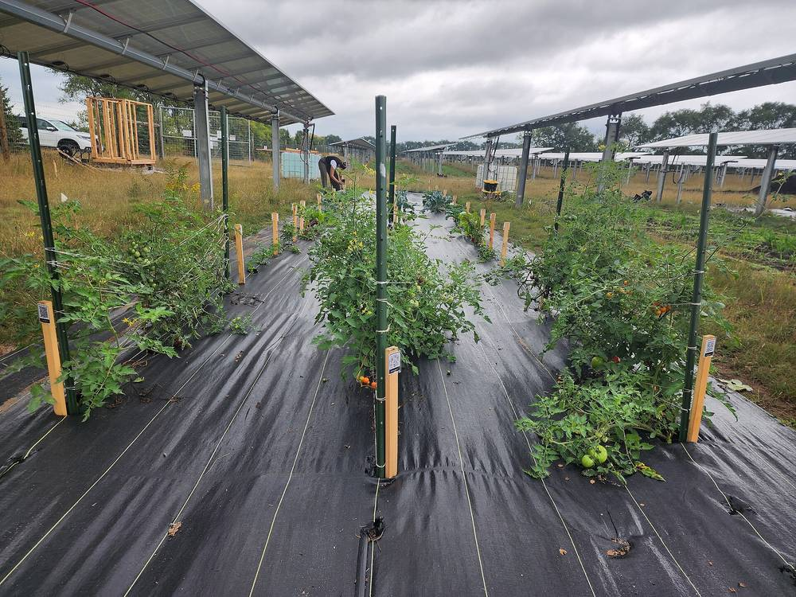

미국 미네소타 '공동체 태양광 정원' 제도 13년…업계 "활동 용량 800MW 넘어 다른 주의 본보기", 전력회사는 '비용 전가' 반박

지붕 없는 세입자도 민간 개발사 태양광 몫을 구독해 요금 공제…주 상무부 "첫 10년 3만4,000곳 넘게 공급", 엑셀 에너지는 "연료비 약 20% 차지하며 전력은 4% 미만" 추정
전기요금이 오르는 가운데 미국 미네소타주 태양광 업계가 2013년 도입된 주의 공동체 태양광 제도를, 자기 지붕에 패널을 달지 않고도 요금을 줄이는 방법이자 다른 주가 따를 본보기로 내세우고 있다. '공동체 태양광 정원'은 민간 개발사가 짓는 중형 태양광으로, 가구·기업·지방정부가 발전량 일부를 구독하면 그만큼 전기요금에서 공제받는 방식이며 세입자·콘도 소유자처럼 지붕에 설비를 달 수 없는 사람들을 겨냥한다. 제도는 고(故) 멜리사 호트먼 하원의장이 이끈 '태양광 일자리법'으로 만들어져 올해 4월 그의 이름이 붙었고, 2023년 개편으로 엑셀 에너지(Xcel Energy)가 운영하던 옛 제도를 줄여 나가는 대신 주 상무부가 저·중소득 가입자를 우선하는 새 제도를 맡아 새 용량을 2026년까지 연 100MW, 2031년부터 연 60MW로 묶었다. 미니애폴리스의 개발사 엔터프라이즈 에너지는 주 안 활동 용량이 800MW를 넘고 가입자는 초기 비용 없이 에너지 비용을 최대 15% 줄일 수 있다고 주장하며, 주 상무부 연구는 첫 10년 동안 3만4,000곳 넘는 가구·기업이 재생에너지를 공급받았고 30년 동안 약 30억 달러의 순편익이 날 것으로 내다봤다. 반면 엑셀 에너지는 2023년 공동체 태양광이 미네소타 연료비의 약 20%를 차지하면서 전력은 4% 미만을 공급했다고 추정하고, 제도를 떠받치느라 평균 가정 고객이 내는 돈이 2022년 월 약 4달러에서 2024년 약 7달러로 늘 것으로 봤으며, 초기에는 태양광 정원 전력의 80% 넘게가 기업 등 비주거 고객에게 가고 가정 몫은 약 14%에 그쳤다는 지적도 나왔다. 비영리단체 솔라 유나이티드 네이버스의 보비 킹 미네소타 책임자는 상무부 연구를 들어 '비용 전가'는 근거 없는 이야기라고 반박해 왔고, 2025년 제도를 2028년에 끝내자는 초당파 시도도 무산됐다.
시민에너지 관점
첫 10년 동안 3만4,000곳 넘는 가구·기업이 요금 공제를 받았다는 것은 지붕이 없는 세입자도 태양광의 혜택을 나눌 수 있는 길을 제도로 열 수 있음을 보여 준다. 그러나 발전소는 민간 개발사가 소유하고 주민은 몫을 구독하기만 하는 구조에서는 수익이 개발사에 쌓이고, 가입하지 않은 고객이 비용을 떠안는다는 '비용 전가' 논쟁도 끊이지 않는다. 영국의 리플 에너지(Ripple Energy)가 웨일스에 세운 풍력 협동조합처럼 가정이 발전소 몫을 직접 사서 주인이 되고 그 발전량만큼 요금을 줄이는 방식은, 혜택과 책임을 같은 사람에게 묶어 이런 논쟁의 뿌리를 줄인다. 국내에서도 지붕 없는 주민이 함께하는 공동 태양광을 설계할 때 구독이 아니라 지역 주민의 공동 소유를 기본으로 삼아야 한다.
출처: The Well News 2026-11-02 댄 매큐(Dan McCue) 원문 보기
米ミネソタ州「コミュニティ・ソーラー・ガーデン」制度13年…業界「稼働容量800MW超、他州の手本」、電力会社は「コスト転嫁」と反論
屋根のない賃借人も民間開発事業者の太陽光の持ち分を購読して料金控除…州商務省「最初の10年で3万4,000カ所超に供給」、エクセル・エナジーは「燃料費の約20%を占めながら電力は4%未満」と推計
電気料金が上がる中、米ミネソタ州の太陽光業界は、2013年に導入された州のコミュニティ・ソーラー制度を、自宅の屋根にパネルを載せなくても料金を減らせる方法であり、他州が倣うべき手本だと売り込んでいる。「コミュニティ・ソーラー・ガーデン」は民間開発事業者が建てる中規模の太陽光発電所で、家庭・企業・地方自治体が発電量の一部を購読すると、その分が電気料金から控除される仕組みであり、賃借人やコンドミニアム所有者など屋根に設備を付けられない人を対象とする。制度は故メリッサ・ホートマン下院議長が主導した「太陽光雇用法」で生まれ、今年4月に彼女の名前が冠された。2023年の改正では、エクセル・エナジー（Xcel Energy）が運営してきた旧制度を縮小し、州商務省が低・中所得の加入者を優先する新制度を担い、新規容量を2026年まで年100MW、2031年からは年60MWに抑えた。ミネアポリスの開発事業者エンタープライズ・エナジーは、州内の稼働容量が800MWを超え、加入者は初期費用なしでエネルギー費用を最大15%減らせると主張し、州商務省の研究は最初の10年で3万4,000カ所を超える家庭・企業に再生可能エネルギーを供給し、30年間で約30億ドルの純便益が生じると見込んだ。一方、エクセル・エナジーは2023年、コミュニティ・ソーラーが同州の燃料費の約20%を占めながら電力は4%未満しか供給していないと推計し、制度を支えるために平均的な家庭客が払う額が2022年の月約4ドルから2024年には約7ドルに増えると見込んだ。初期にはソーラー・ガーデンの電力の80%超が企業など非住宅の顧客に回り、家庭向けは約14%にとどまったとの指摘もあった。非営利団体ソーラー・ユナイテッド・ネイバーズのボビー・キング・ミネソタ代表は、商務省の研究を根拠に「コスト転嫁」は根拠のない話だと反論してきており、2025年には制度を2028年に終わらせようとする超党派の試みも退けられた。
市民エネルギーの視点
最初の10年で3万4,000カ所を超える家庭・企業が料金控除を受けたことは、屋根を持たない賃借人も太陽光の恩恵を分かち合える道を制度で開けることを示している。しかし発電所を民間開発事業者が所有し、住民は持ち分を購読するだけの仕組みでは、収益は開発事業者に積み上がり、加入しない顧客が費用を背負うという「コスト転嫁」の論争も絶えない。英国のリップル・エナジー（Ripple Energy）がウェールズに設けた風力協同組合のように、家庭が発電所の持ち分を自ら買って持ち主となり、その発電量の分だけ料金を減らす方式は、恩恵と責任を同じ人に結びつけ、こうした論争の根を小さくする。韓国でも屋根のない住民が参加する共同太陽光を設計する際には、購読ではなく地域住民の共同所有を基本に据えるべきだ。
出典: The Well News 2026-11-02 ダン・マッキュー（Dan McCue） 原文を読む
美国明尼苏达州"社区太阳能花园"制度实施13年…业界称"运行容量超800MW、可作其他州范本"，电力公司以"成本转嫁"反驳
没有屋顶的租户也能认购民间开发商光伏电站的份额抵扣电费…州商务部称"头10年为3万4,000多户供电"，Xcel Energy估算"占燃料成本约20%、供电却不足4%"
在电费不断上涨之际，美国明尼苏达州的太阳能业界正把2013年推出的州社区太阳能制度，宣传为不必在自家屋顶装板也能降低电费的办法，以及值得其他州效仿的范本。"社区太阳能花园"是由民间开发商建设的中型光伏电站，家庭、企业和地方政府认购其部分发电量后，可按相应电量抵扣电费，主要面向租户、公寓业主等无法在屋顶安装设备的人群。该制度源于已故众议院议长梅莉莎·霍特曼主导的《太阳能就业法》，今年4月以她的名字命名。2023年的改革逐步缩减原由Xcel Energy运营的旧制度，改由州商务部负责优先照顾中低收入用户的新制度，并把新增容量限定为2026年前每年100MW、2031年起每年60MW。明尼阿波利斯开发商Enterprise Energy称，州内运行容量已超过800MW，用户无需前期费用即可把能源支出最多降低15%；州商务部的研究则显示，制度头10年为3万4,000多户家庭和企业提供了可再生能源，并预计30年内净收益约30亿美元。另一方面，Xcel Energy在2023年估算，社区太阳能占其明尼苏达燃料成本约20%，供电却不足4%，并预计普通家庭用户为支撑该制度支付的金额将从2022年每月约4美元增至2024年约7美元；也有人指出，早期太阳能花园的电力80%以上流向企业等非居民用户，家庭仅占约14%。非营利组织Solar United Neighbors明尼苏达负责人博比·金依据商务部研究，一直反驳"成本转嫁"并无根据；2025年一项要在2028年终止该制度的跨党派尝试也未能成功。
市民能源视角
头10年有3万4,000多户家庭和企业获得电费抵扣，说明可以通过制度为没有屋顶的租户打开分享光伏收益的通道。但在发电站归民间开发商所有、居民只认购份额的结构下，收益集中在开发商手里，未认购的用户承担成本这一"成本转嫁"争论也始终不断。像英国Ripple Energy在威尔士设立的风电合作社那样，由家庭直接购买电站份额成为主人，并按其发电量减少电费，就把收益和责任系于同一群人，从根源上减少此类争议。韩国在设计让无屋顶居民参与的共同光伏时，也应以地区居民共同所有而非认购为基本。
来源: The Well News 2026-11-02 丹·麦丘（Dan McCue） 查看原文
Minnesota's 'community solar garden' program at 13: industry touts over 800 MW as a model for other states, utility counters with 'cost shift'
Renters without roofs subscribe to shares of privately developed arrays for bill credits; state Commerce Department says more than 34,000 served in first decade, while Xcel Energy estimated the program took about 20% of fuel costs for under 4% of power
With electricity bills rising, Minnesota's solar industry is promoting the state's community solar program, created in 2013, as a way to lower bills without rooftop panels and as a model for other states to follow. A community solar garden is a mid-sized array built by a private developer; households, businesses and local governments subscribe to part of its output and receive a matching credit on their power bills, an arrangement aimed at renters, condo owners and others who cannot put equipment on a roof. The program grew out of the Solar Energy Jobs Act led by the late House Speaker Melissa Hortman and was named after her in April, and a 2023 overhaul wound down the original program run by Xcel Energy, handed a new one prioritising low- and moderate-income subscribers to the state Department of Commerce, and capped new capacity at 100 MW a year through 2026 and 60 MW a year from 2031. Minneapolis developer Enterprise Energy claims the state has more than 800 MW of active capacity and that subscribers can trim energy costs by up to 15% with no upfront fees, while a Commerce Department study found that more than 34,000 households and businesses received renewable power in the first decade and projected net benefits of nearly $3 billion over 30 years. Xcel Energy, on the other hand, estimated in 2023 that community solar made up about 20% of its Minnesota fuel costs while supplying under 4% of its power there, and projected that an average residential customer's contribution to the program would rise from about $4 a month in 2022 to about $7 in 2024; critics also noted that in the early years more than 80% of solar garden power went to businesses and other non-residential customers and only about 14% to households. Bobby King, Minnesota director of the nonprofit Solar United Neighbors, has rejected the cost shift as groundless, citing the department's study, and a bipartisan attempt in 2025 to end the program in 2028 failed.
Citizen Energy View
That more than 34,000 households and businesses received bill credits in the first decade shows that policy can open a way for renters without roofs to share in the benefits of solar. But when private developers own the plants and residents merely subscribe to shares, the returns pile up with the developer, and the cost-shift dispute over non-subscribers footing the bill never goes away. Models like the wind co-operative that Britain's Ripple Energy set up in Wales, where households buy shares in a plant, become its owners and cut their bills in line with its output, tie benefits and responsibilities to the same people and shrink the root of such disputes. When Korea designs shared solar for residents without roofs, it should start from community ownership by local residents rather than subscriptions.
Source: The Well News 2026-11-02 Dan McCue Read the original